University of North Texas · University of North Carolina Wilmington
SprayCraft is an Agriculture Cyber-Physical System (A-CPS) that models disease spread as spatial graphs, detects infection hotspots via message passing, and computes near-optimal drone spray routes using TSP — producing GPS-ready waypoints with variable pesticide dosage per location.
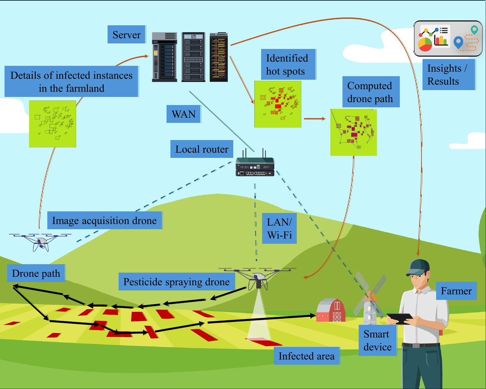
Fig. 1 — End-to-end system: image acquisition → spatial analysis → hotspot detection → path computation → drone deployment.
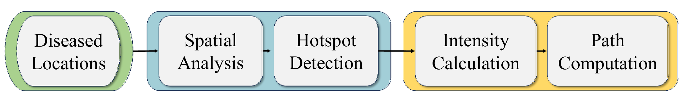
Fig. 2 — Method block diagram: Diseased Locations → Spatial Analysis → Hotspot Detection → Intensity Calculation → Path Computation.
A two-stage pipeline — spatial graph analysis for hotspot scoring, then TSP + boustrophedon path generation for drone routing.
Each diseased instance → node (feature = diseased area). Edges connect nodes within pathogen dispersal radius, weighted by inverse distance.
hu(k+1) = UPDATE(hu(k), AGG({hv(k) · 1/W(u,v) : v ∈ N(u)})). Nodes with highest aggregated features = primary hotspots.
Normalize node features → hotspot probability pu ∈ [0,1]. Drives spray dosage at each location.
MST + minimum-weight matching on odd-degree nodes → Eulerian → Hamiltonian circuit. Provably within 1.5× of optimal.
Serpentine parallel sweeps at each diseased location. Path spacing = 2× spray radius (derived from hotspot score). 100% coverage guaranteed.
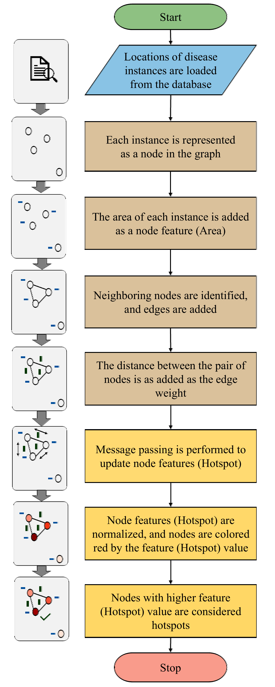
Hotspot detection algorithm: data loading → graph build → message passing → normalization → scoring.
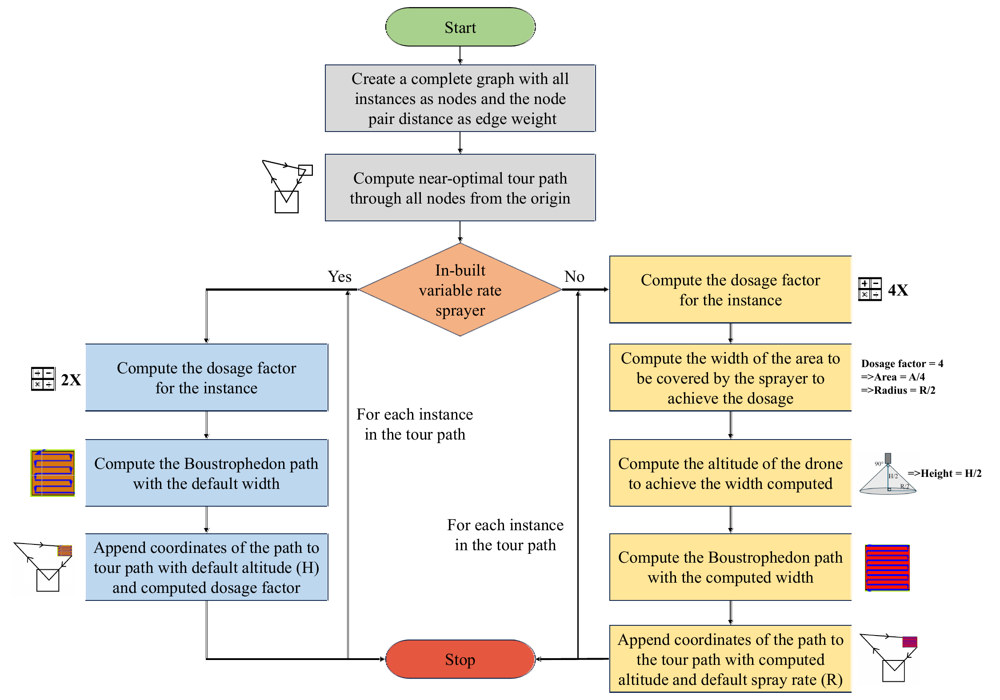
Path computation flowchart: variable rate vs. constant rate sprayer decision logic.
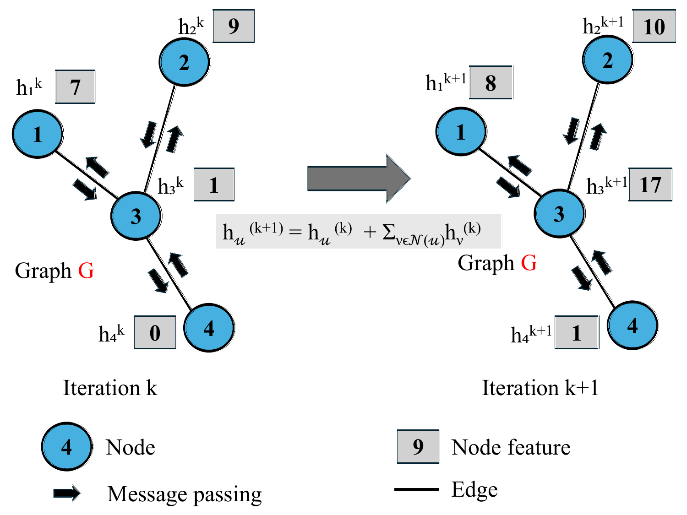
Message passing: each node aggregates infection signals from neighbors across iterations k → k+1.
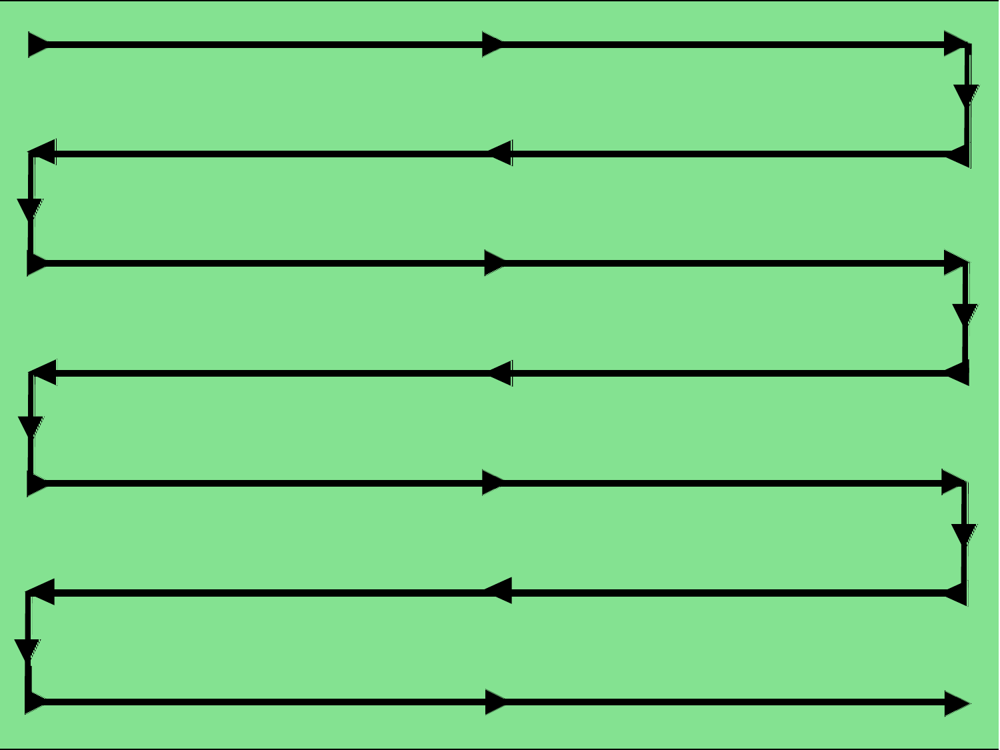
Boustrophedon (serpentine) coverage path — alternating horizontal passes, spacing = 2× spray radius.
SprayCraft supports both variable-rate and constant-rate spraying systems. A single parameter switch adapts the same pipeline to either hardware.
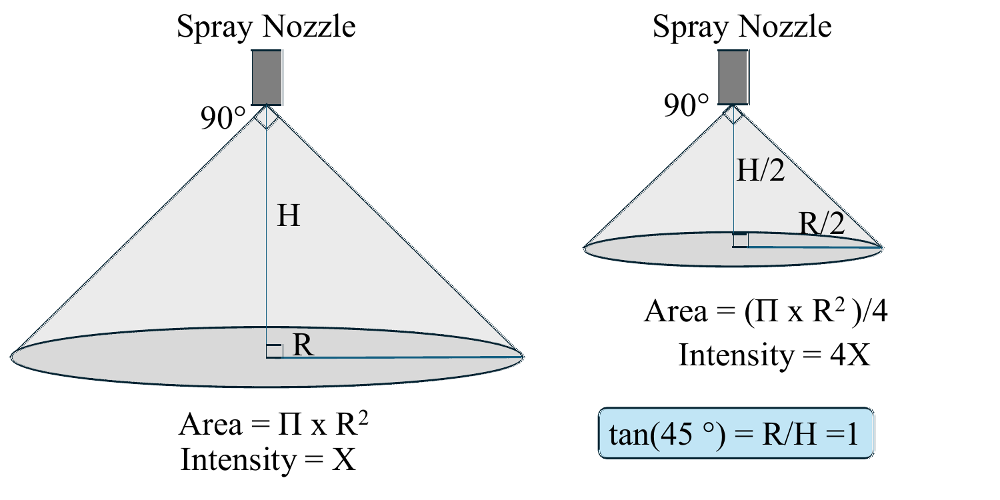
Conical spray pattern geometry: effective coverage area = π·R², adjusted by flight altitude. Lower altitude → denser spray over hotspots.
PWM/PID flow control. Hotspot probability directly modulates spray dosage in real time. Altitude stays constant.
Fixed flow rate. Effective spray area controlled by adjusting flight altitude at each diseased location.
Evaluated on a synthetic 250×250 m farmland with 36 diseased apple leaf instances (Black Rot, Cedar Apple Rust, Apple Scab).
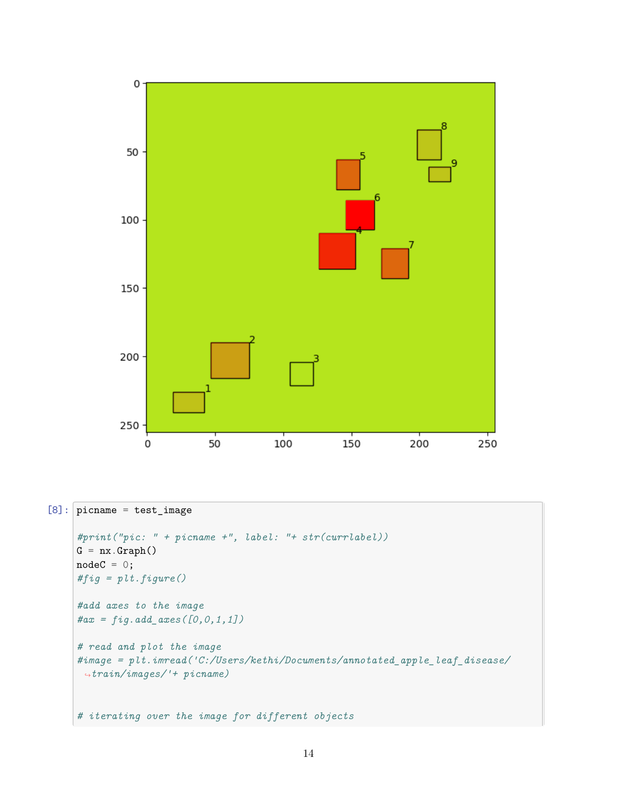
Hotspot probability map after message passing — nodes 14 & 15 identified as primary hotspots (darkest red).
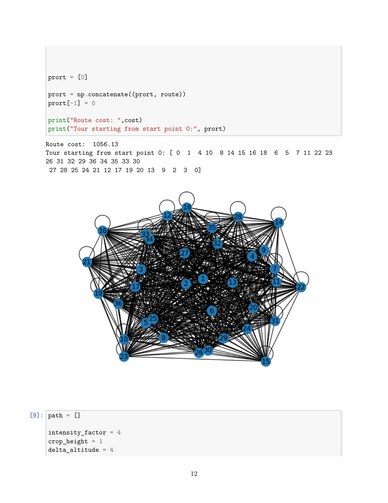
Near-optimal TSP tour across 36 locations — total cost 1,056.13 m, computed via Christofides algorithm.
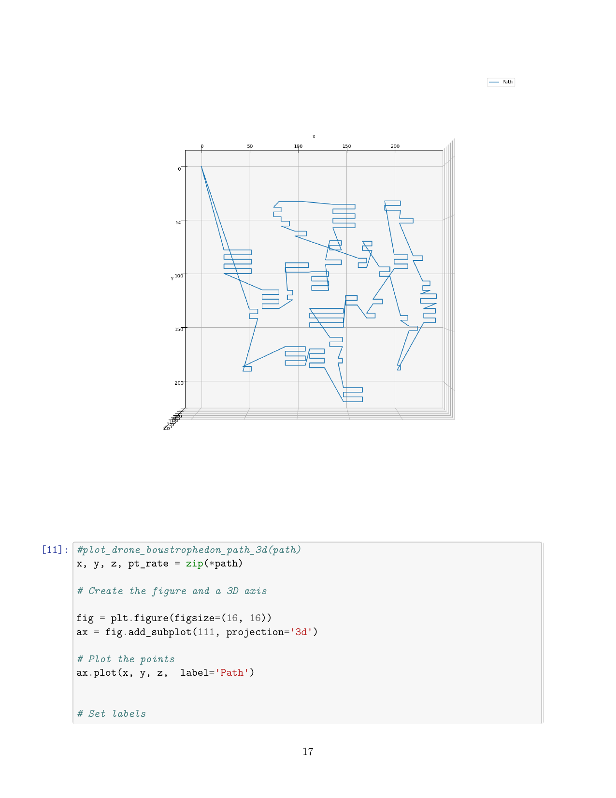
3D flight altitude map (constant rate sprayer) — altitude varies 3.0–4.8 m; lower over hotspots for denser coverage.
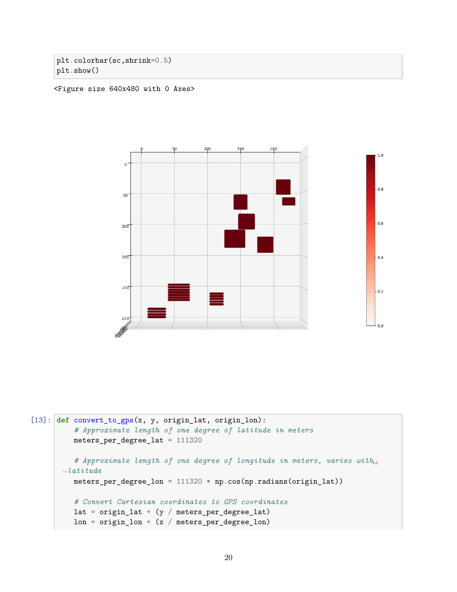
Spray intensity heat map (variable rate sprayer) — darker regions = higher pesticide concentration at hotspot clusters.
Complete implementation as a single Jupyter notebook.
If SprayCraft contributes to your research, please cite: